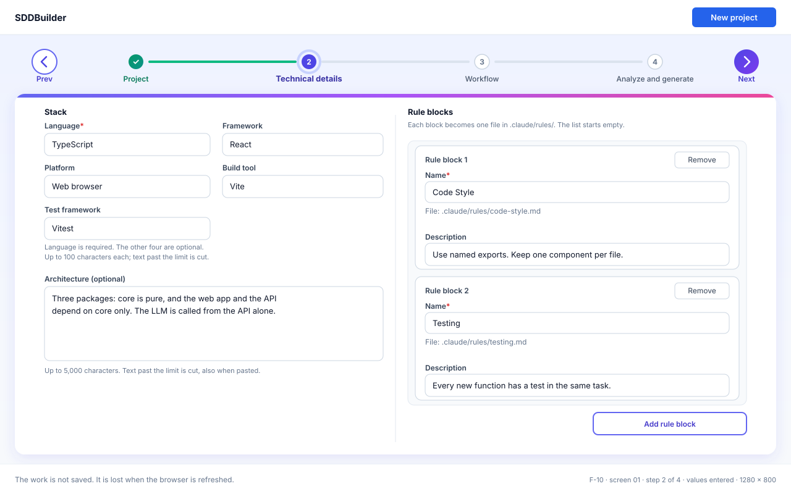
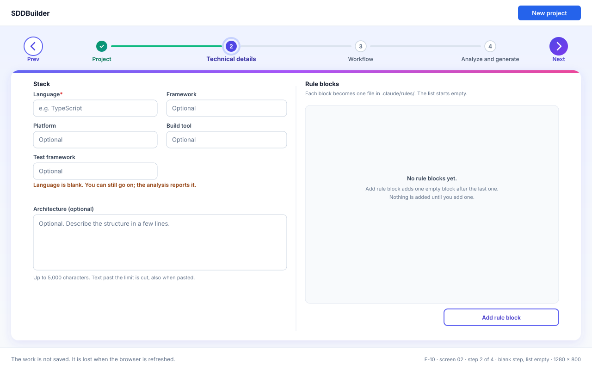
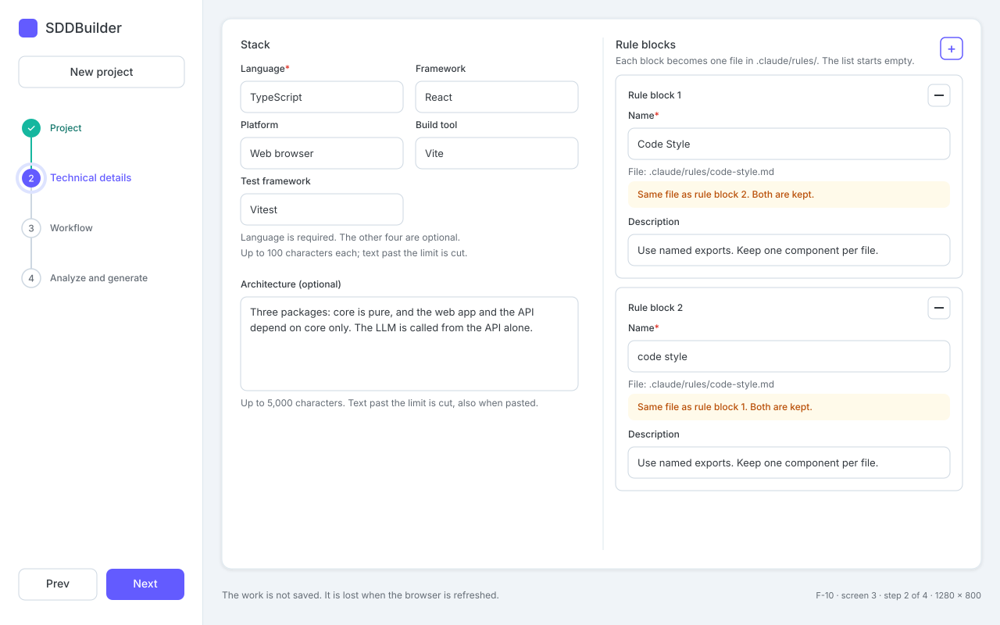
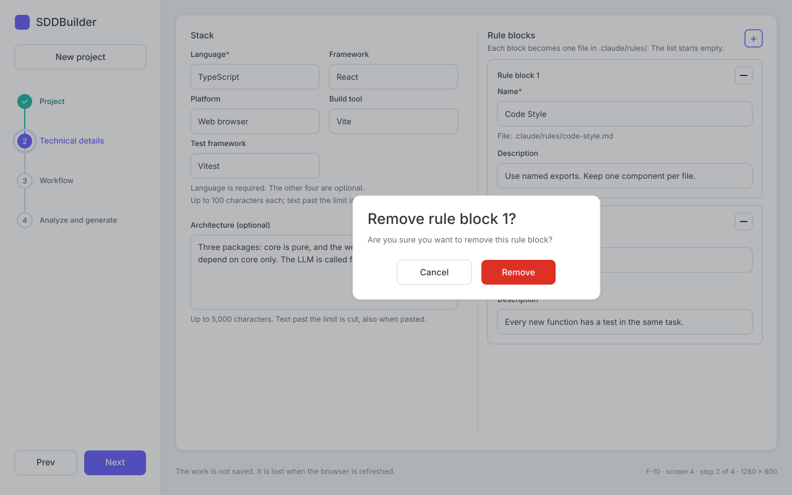
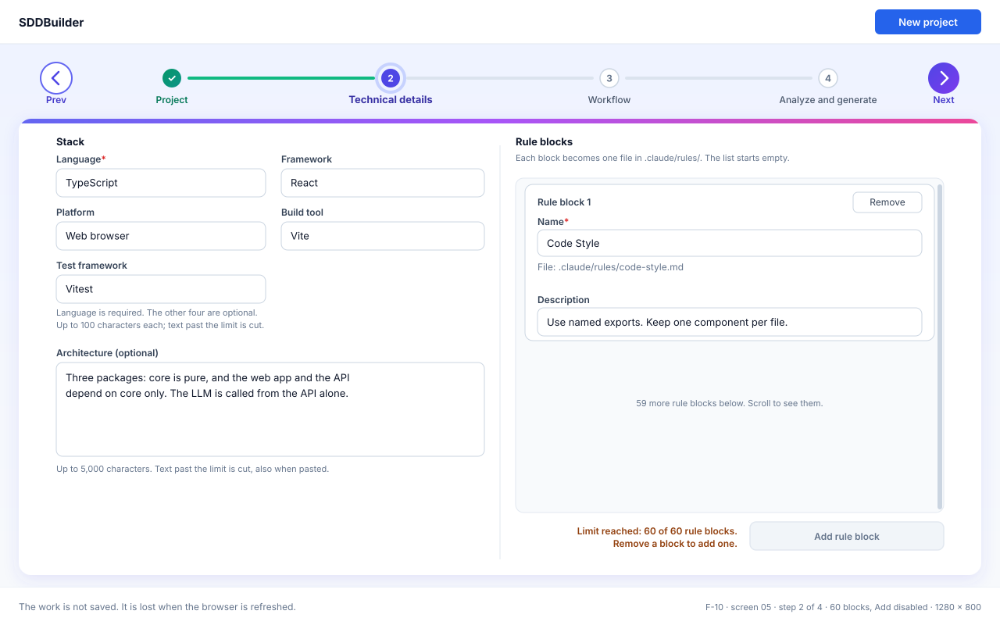
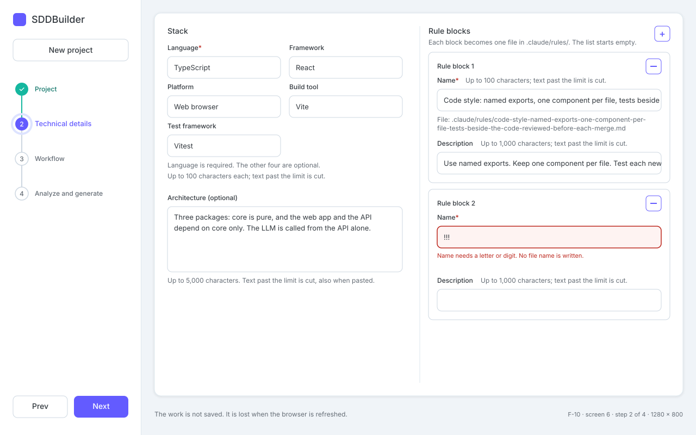

Step 2 of the wizard on the approved F-09 left-panel frame (step 2 current, Project done, Prev and Next enabled): the stack, the architecture text and the rule blocks, with their limits, the file name of each block, the duplicate-id flag and the removal confirmation. Wireframes only; read screens.md.
Stack, architecture and two rule blocks filled in. Prev and Next are enabled.

Empty fields, no rule block. Language is blank and Next stays enabled; the + button is enabled.

Two rule blocks whose names give the same file. Both show the duplicate-id message and both are kept.

The minus on rule block 1 opens a compact confirmation. Cancel keeps the block; Remove removes it only.

At the limit of 60 rule blocks the + button is disabled, and the reason is shown beside it.

The name is at 100 characters and the description at its 1,000-character limit. A name with no letter or digit gives a message and no file name.
